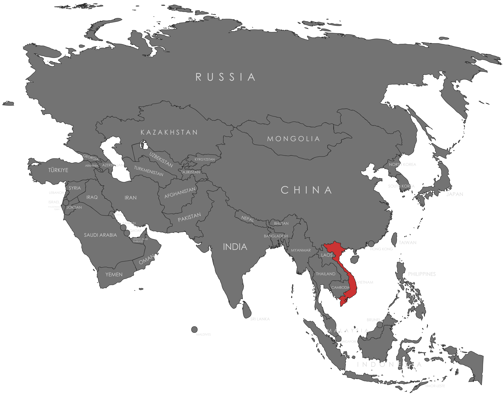

Specifications
- Local Name: Việt Nam (Viet Nam)
- Proportion: 2:3
- Name of the Flag: Cờ đỏ sao vàng (Red flag with a yellow star)
- Adopted: November 30, 1955 (adopted by the Democratic Republic of Vietnam; continued as the flag of the unified Socialist Republic of Vietnam on July 2, 1976)
Symbolism
- Red field: Revolution, blood shed for independence, and national unity
- Yellow star: The Vietnamese people and national identity
- Five-pointed yellow star: Unity of five social classes - farmers, workers, intellectuals, youth, and soldiers
Colors:
Shapes / Symbols:
Meaning / Special Display
- The flag is prominently displayed during national celebrations, commemorations, and public events, symbolizing unity and pride across all regions of Vietnam.
- Display rules: The star must point upright. The flag is flown on national holidays and official events and must be kept in good condition.
Description
- The flag represents Vietnam's revolutionary history and the unity of its people working together for national development.
- For citizens, it symbolizes resilience, collective effort, national pride, and commitment to progress.
